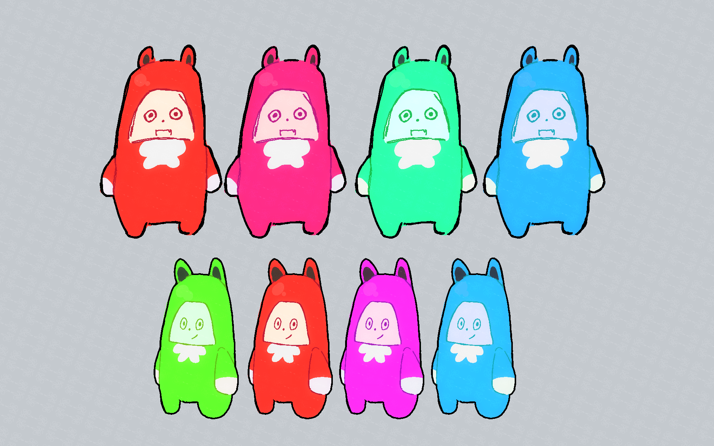

WATCH STREAM
Pureredattack
The Alien Wanderer
About Me!
Hey-o to all! I come for fun!
Nice to meet you! I'm Pureredattack (Red for short), your
super chill alien streamer. I have always
wanted to be a streamer but more importantly, share
"outerworldlyness" to everyone!
I want to stream the stuff I love watching so I hope to make some variety content/gaming! I would love to experiment the world of idoling as well as my inspiration grew from watching idol concerts! I hope you enjoy watching the start of my digital journey •ᴗ•
★ My Dream Goals
I hope to achieve one day from now on!! ദ്ദി ˉ͈̀꒳ˉ͈́ )✧
- Pro-made Live2D model!
- 3d Model and maybe even concert?
- Make some cool tech like making my own linux distro! (૭ ｡•̀ ᵕ •́｡ )૭
- Collab with awesome people!
- Most importantly, to have a community!
Character Portrait
Self-portrait artwork will go here
Character Lore
★ What I am ★
Born in a galaxy far beyond the Milky Way, I belonged to a species known as the Maglitelegeaurtemtem (or just magtemmies for short ᵔ ᵕ ᵔ) - Strange little guys who simply love to play video games. (How I'm related to them I wish I knew..)
★ How I got here ★
Out of boredom, I decided to crash out here on earth. While stranded, I decided to chill around here to try out some earthly games. To fit in with humans, I decided to cut my alien `tennas but doing so led me to having fresh baby ones! Thankfully, they just look like hair wisps to the average person.
★ Skills and Specialities ★
Since I'm from a gamer species, I possess the usual god-like gaming skills (mostly cause I play games all day). I primarly enjoy rhythm and first-person shooter games but have a deep fascination for weird, out-of-the-box, and just simply unknown games that can make me giggle. I'm always up for a variety to explore what's unknown.
★ Life Then On ★
Being here isn't so bad as I thought! Watching people stream and sing made me realize I wanna do the same too! Instead of being a big couch potato and keeping all my hidden knowledge locked inside me forever, I want to share it to the world! Follow your dreams too! You'll never expect the outcome so, hey we're in this together!
Credits
★ All the art you see on stream was done by me! ᵔ ᵕ ᵔ
✦ . 　⁺ 　 . 　⁺ 　 . 　⁺ 　 . 　⁺ 　 . 　⁺ 　 . ✦ . 　⁺ 　 . 　⁺ 　
. 　⁺ 　 . 　⁺ 　 . 　⁺ 　 . ✦

Model Design --Working on Character Design Sheet!--
